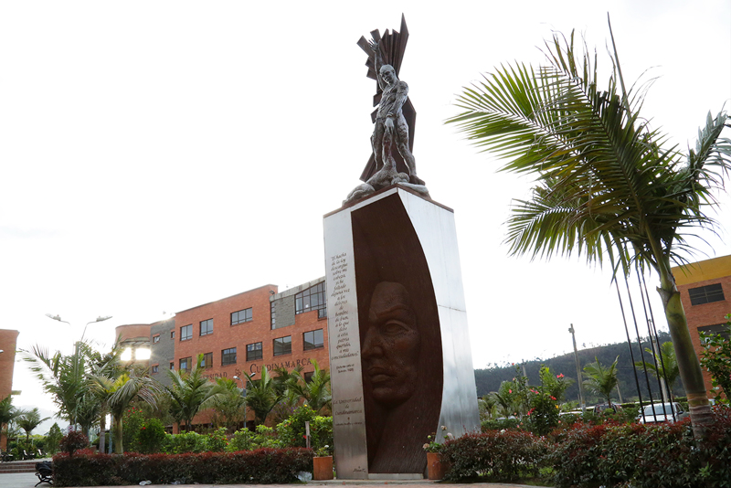

<div class="bg-cyan-50 mt-20 md:mb-0 text-cyan-950 w-full">
  <div class="p-15 relative flex flex-col w-full overflow-hidden">
    
    <div
      class="absolute md:top-12 md:left-28 md:w-[38rem] flex flex-col w-full justify-center p-10 text-center md:text-start"
    >
      <h2 class="md:text-5xl mb-5 text-4xl font-semibold">Sobre Nosotros</h2>
      <p>
        Somos un equipo de estudiantes de la Universidad de Cundinamarca,
        extensión Facatativá, que implementa la metodología Scrum para la
        elaboración de un proyecto que tiene como finalidad la mitigación de
        casos de violencia de género, intrafamiliar, infantil y adulto mayor por
        medio de un modelo de Machine Learning. Creemos firmemente en el poder
        de la tecnología para catalizar el cambio positivo en nuestras
        comunidades, y estamos comprometidos a trabajar incansablemente para
        hacer de nuestro proyecto una realidad que marque la diferencia en la
        vida de quienes sufren en silencio. Agradecemos profundamente el apoyo
        de nuestra universidad, así como de todas las personas e instituciones
        que nos han brindado su respaldo en esta misión.
      </p>
    </div>
  </div>
</div>
